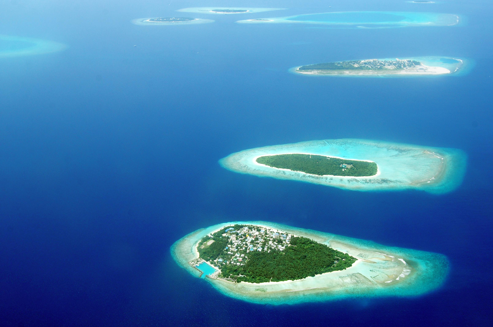
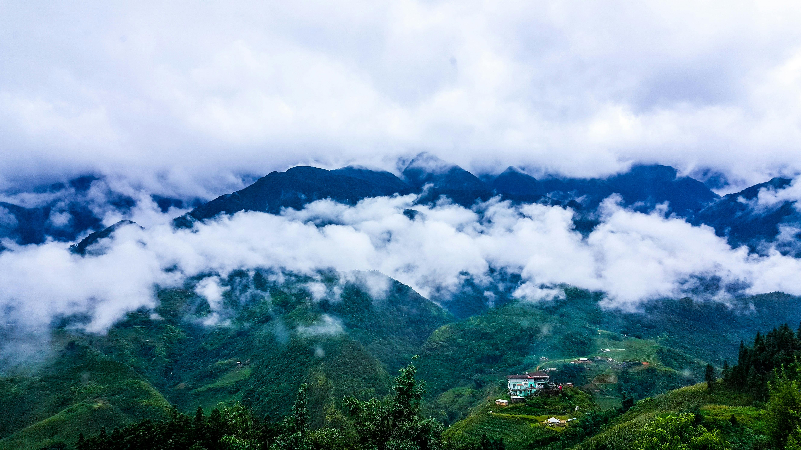
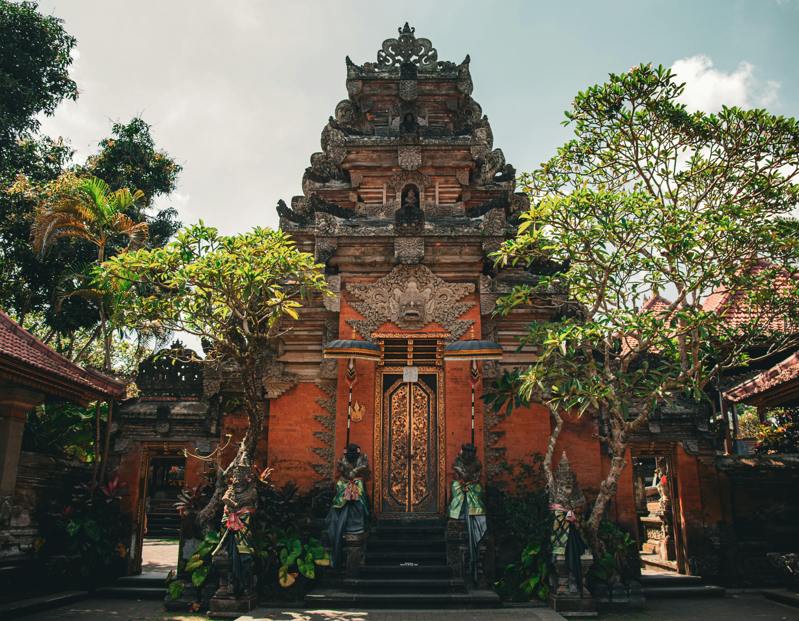

CONOCE ASIA
Descubre destinos increíbles para tu próxima aventura.
Maldivas
Maldivas, un tesoro del océano Índico, es un destino de ensueño para quienes buscan experiencias tropicales inolvidables. Con sus playas de arena blanca, aguas cristalinas y lujosos complejos turísticos, este archipiélago ofrece un escape paradisíaco que encanta a viajeros de todo el mundo.
Entre las islas más destacadas para explorar en Maldivas se encuentra Malé, la animada capital, que ofrece una mezcla única de cultura local y modernidad. Además, los resorts de lujo en islas privadas ofrecen una experiencia exclusiva, donde los visitantes pueden disfrutar de la privacidad y la tranquilidad de sus propios paraísos tropicales.
Las Maldivas son famosas por sus actividades acuáticas, desde el buceo en arrecifes de coral hasta el avistamiento de mantarrayas y tiburones ballena. Los amantes del océano pueden explorar la impresionante biodiversidad marina de los atolones maldivos, donde se encuentran algunas de las mejores áreas de buceo del mundo.
Además de sus atractivos naturales, Maldivas ofrece la oportunidad de relajarse y rejuvenecer en sus lujosos spas y centros de bienestar. Con tratamientos inspirados en la tradición local y entornos serenos, los viajeros pueden disfrutar de una experiencia de bienestar total mientras se entregan al ambiente tranquilo de las islas.
En resumen, Maldivas es un destino que combina el lujo indulgente con la belleza natural, ofreciendo una experiencia tropical incomparable para aquellos que buscan escapar de la rutina y sumergirse en un paraíso terrenal.
Vietnam
Vietnam, en el sudeste asiático, es un destino fascinante para aquellos que buscan viajes tropicales llenos de historia, cultura y belleza natural. Con su combinación única de paisajes impresionantes, playas de ensueño y una rica herencia cultural, Vietnam ofrece una experiencia única que cautiva a los viajeros de todo el mundo.
Una de las atracciones más destacadas de Vietnam es la bahía de Ha Long, reconocida por sus espectaculares formaciones rocosas y aguas turquesas. Aquí, los visitantes pueden disfrutar de cruceros pintorescos, explorar cuevas misteriosas y maravillarse con la belleza natural de este sitio declarado Patrimonio de la Humanidad por la UNESCO.
Además de sus impresionantes paisajes costeros, Vietnam es hogar de ciudades vibrantes como Hanói y Ho Chi Minh, que ofrecen una mezcla única de tradición y modernidad. Los viajeros pueden explorar antiguos templos, bulliciosos mercados y saborear la deliciosa cocina vietnamita en las calles llenas de vida de estas ciudades históricas.
En resumen, Vietnam es un destino diverso y emocionante que combina la belleza natural con una rica herencia cultural. Ya sea explorando las maravillas naturales de la bahía de Ha Long o sumergiéndose en la vida urbana de sus ciudades, Vietnam ofrece una experiencia tropical inolvidable para todos los que buscan aventura y descubrimiento.
Bali
Bali, conocida como la "Isla de los Dioses", es un destino paradisíaco en Indonesia que cautiva a los viajeros con su belleza natural y su rica cultura. Desde sus exuberantes paisajes de arrozales en terrazas hasta sus impresionantes templos y playas de arena dorada, Bali ofrece una experiencia tropical única que deja una impresión duradera en todos los que la visitan.
Los templos emblemáticos de Bali, como el Templo de Besakih y el Templo de Tanah Lot, son lugares de gran importancia espiritual y ofrecen vistas impresionantes de la isla. Además, las playas de Bali son ideales para relajarse bajo el sol, practicar surf en las olas cristalinas o explorar la colorida vida marina mientras se bucea en las aguas cálidas del océano Índico.
La hospitalidad balinesa y su deliciosa gastronomía son parte integral de la experiencia de viaje. Los viajeros pueden disfrutar de una amplia variedad de platos tradicionales balineses en los warungs locales, así como de la cocina internacional en los restaurantes de clase mundial. Además, las actividades culturales, como las danzas tradicionales y las ceremonias religiosas, brindan una visión fascinante de la rica herencia de Bali.
En resumen, Bali es un destino tropical que ofrece una combinación única de belleza natural, cultura vibrante y hospitalidad cálida, lo que la convierte en un lugar verdaderamente mágico para explorar y descubrir.